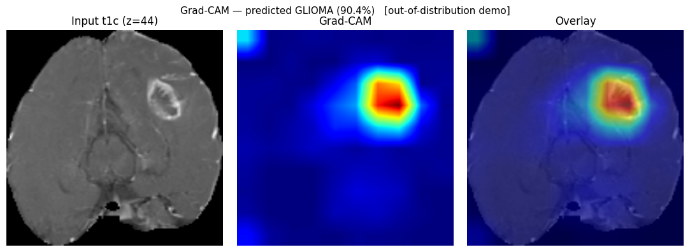
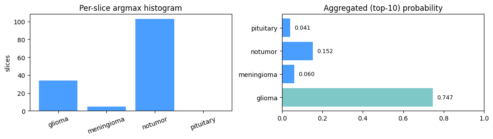

- 0.84Dice
segmentation, post-processed - 27.6dBPSNR
reconstruction, unknown slices - 0.980Macro F1
classifier, group-disjoint split - ×1.76Predicted growth
over 180 days
The pipeline
Each stage consumes the previous stage's output, so the order is fixed. Stage 4 closes the loop by feeding the predicted future back through segmentation and reconstruction.
-
0b
Classify
EfficientNet-B3 over every slice, aggregated on tumour evidence rather than a naive mean. Grad-CAM shows which pixels drove the call.
-
1
Segment
A custom 2D nnU-Net with deep supervision takes all four MRI modalities and returns a binary tumour mask. Selection used EMA weights, 16-augmentation TTA and morphological post-processing — the same path used at inference.
-
2
Reconstruct
A Fast2p5D generator, adversarially fine-tuned, predicts each missing slice from a five-slice window plus the Stage-1 mask as a density channel — turning a sparse acquisition into a dense volume.
-
3
Predict growth
An inverse Fisher–KPP physics-informed network recovers patient-specific diffusion and proliferation parameters from the observed tumour, then integrates them forward.
-
4
Close the loop
The evolved density is composited back into realistic anatomy, re-segmented by nnU-Net and re-reconstructed by the GAN. The two independent volume estimates agree to 0.5%. In the viewer this reads directly: cyan is the tumour now, red is what is predicted to be new.
Explainability

Why the aggregation matters
Classifying a volume means pooling per-slice predictions, and the obvious choice is
wrong. Most slices contain no tumour, so a naive mean is dominated by them — it calls this
glioma patient notumor at 64.3%. Ranking slices by tumour evidence and averaging
the top ten gives glioma at 74.7%. Both are printed at runtime so the bias stays
visible instead of hidden.

Read this before the numbers
- Not a medical device. Research and educational use only — not for diagnosis, treatment planning, or any clinical decision-making.
- The classifier is out of distribution inside the pipeline. It was
trained on pre-operative 2D JPEGs; the cohort it runs on here is 100% glioma and
post-operative, with no tumour-type ground truth to score against. Its prediction on
this patient is a wiring demonstration carrying no diagnostic weight — flagged as such
in the notebook, in
metrics.json, and in the viewer. - The growth is illustrative, not calibrated. Stage-4 knobs are tuned for visible change; the physically faithful setting produces much subtler evolution. Predicted volumes have not been validated against follow-up imaging.
- Single-fold, single-institution evaluation. One patient-level split, no cross-validation, no external test set.
- Confidence is uncalibrated and currently under-confident, a side effect of label smoothing. Read it as a ranking score, not a probability.
The classifier's 0.980 macro-F1 comes from a group-disjoint re-split, not the dataset's shipped one: every image is fingerprinted with a 256-bit perceptual hash, near-duplicates are grouped with union-find, and no group spans train, validation and test. That is a harder split than most published numbers on this dataset use.
Dig in
- Source on GitHub Seven notebooks, the viewer, and the deploy pipeline.
- The full run, already executed Every stage with its figures and outputs — no setup, no GPU, renders in the browser.
- README Architecture, results tables, and the complete list of limitations.
- Demo script How to present this in five minutes, with the honest answers to the obvious questions.